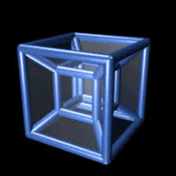

What is the fourth dimension? It's TIME! Yes and we are actually 4 dimensional because we all exist at a point in time! BUT! time may not be as you think BECAUSE we consider time as Earth's position on it's orbital path and it's rotation. SO what we know about the 4th dimension is not much...
YES! because on a two dimensional plane (paper) you can create an illusion of a 3 dimensional place. SO on a 3 dimensional plane (made out of clay) you MIGHT BE ABLE TO GLIMPSE INTO THE 4TH DIMENSION!(Disclaimer:This is a complete guess and I cannot be responsible for the actual turnout of such an experiment)
(We all love a good "but") There is more to it! Yes, they say the shadow of a 4D object would be 3D because the shadow of a 3D object is 2D AND if you did your research on a 4D cube you might have seen a cube inside a cube as a diagram.
Yes, so how this this tie back to time? Well here's what google AI says when asked "how does a tesseract (4D cube) relate to time":
"In physics, time is often referred to as the fourth dimension and is used alongside the three spatial dimensions to describe events in a system known as spacetime. The concept of the tesseract can be used to visualize how an object might move through the fourth dimension, similar to how a cube can be unfolded to show its movement through three-dimensional space.
It's important to note that while time is considered a dimension, it is fundamentally different from spatial dimensions. It has a direction (forward), and it is not possible to move freely back and forth in time as one can in space. However, the tesseract serves as a useful tool for understanding and visualizing the concept of time as the fourth dimension."
WOW That's a lot of info but I gues that's what Google AI does!See you next time for...